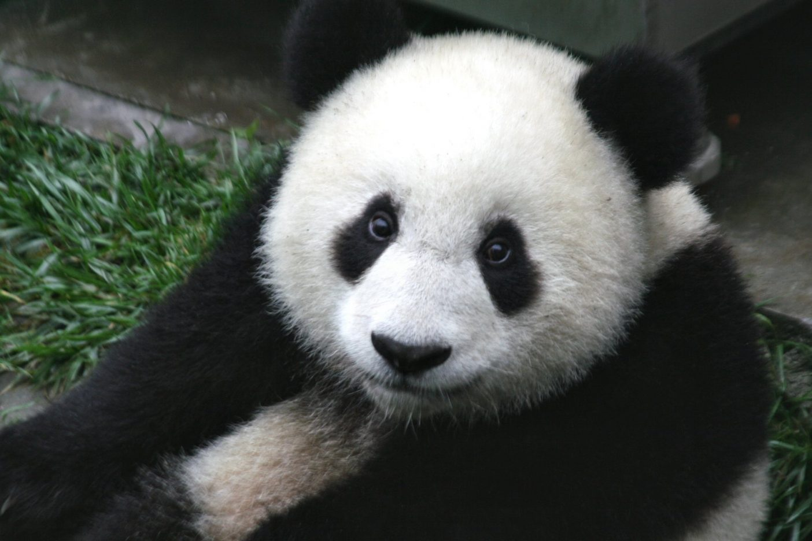
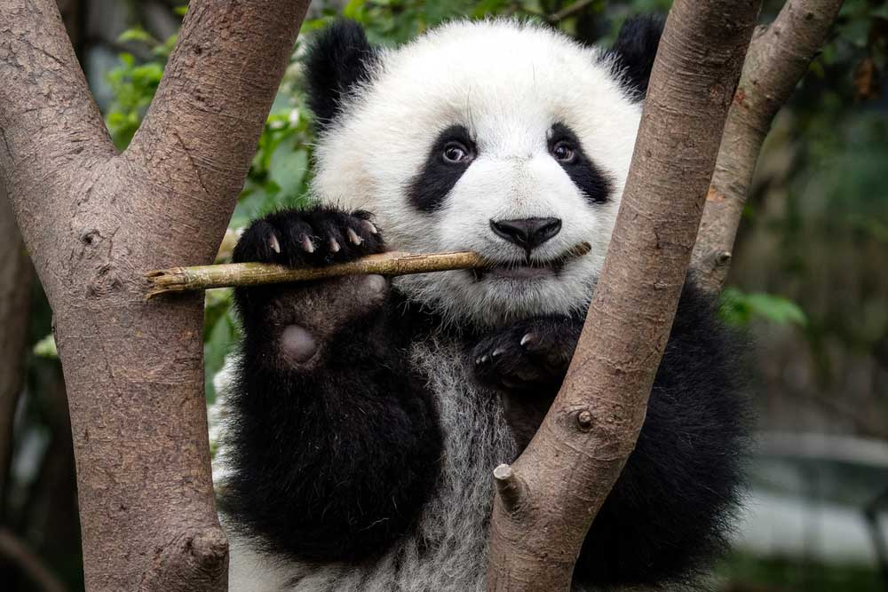

Oso Panda
Poseen un pelaje blanco con partes negras alrededor de los ojos, en las orejas, hocico, hombros y extremidades. Tienen unos molares anchos y planos así como una estructura ósea de la muñeca reforzada que, junto con el pulgar, le ayudan a sostener, romper y comer el bambú.
Los pandas viven principalmente en bosques de bambú, en lo alto de las montañas del oeste de China, alimento del que subsisten casi por completo. Deben comer entre 26 y 84 libras (12 y 38 kg) de bambú cada día, una increíble labor para la cual usan los alargados huesos de sus muñecas como si fueran dedos pulgares.
Hábitos. Los pandas son animales normalmente solitarios, aunque periódicamente se juntan entre ellos fuera de la temporada de reproducción, por amistad entre ellos. Su mayor actividad se desarrolla durante la salida y la puesta del sol pasando la mayor parte del tiempo restante durmiendo en bosques de bambú.

Datos sobre los Osos Panda
| Nombre Científico | Tamaño | Dieta | Hábitat | Estado de Conservación |
|---|---|---|---|---|
| Ailuropoda melanoleuca | 1.2 a 1.9 metros de longitud | Principalmente bambú | Bosques de bambú | Vulnerable |